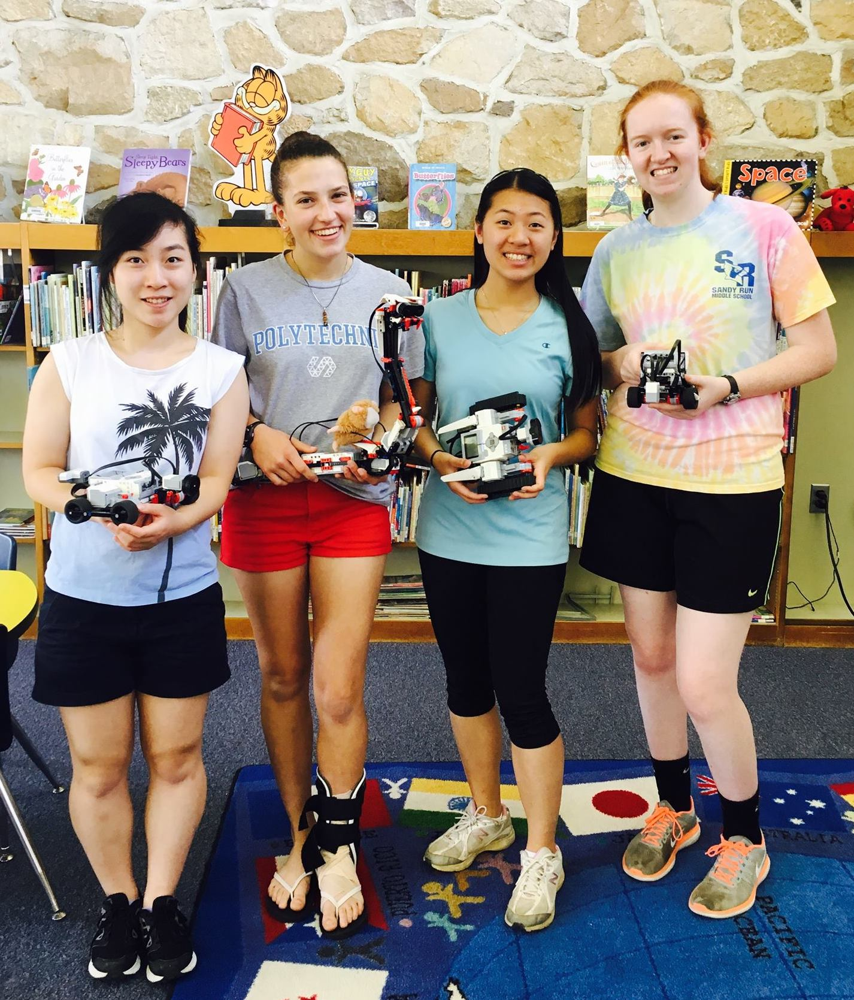

Hi, I'm Clara Song!
I am a freshman at Cornell University studying Computer Science in the College of Engineering.
Goals for January:
- Make 3 completely original CSS Art codepens
- Learn to use GitHub collaboratively
- Learn to write with my Left hand
Fun Fact I learned this month:
Young Issac Newton stabbed himself in the eye with a needle to learn more about how we see color. Unfortunately it got him no where, but his prism experiments had more success!
Projects I've worked on lately
Lately I've been learning how to make CSS Art, and I'm having a BLAST. Below's some of my favorites so far! Go to my CodePen account on the left to see more!
See the Pen CSS Cat & Dog Chat by Clara Song (@clarawrsong) on CodePen.
See the Pen CSS Hoodie by Clara Song (@clarawrsong) on CodePen.
See the Pen CSS Wall-E by Clara Song (@clarawrsong) on CodePen.
Member of the Creative Coding Club
I've joined a couple other online clubs and communities recently, like Systers and AsianWic, but my favorite so far is the Creative Coding Club! I joined on November 2017. I was just a shy observer in the beginning before I started making codepens. However, I quickly realized how supportive the community is when I first shared my codepen to the club's slack! I hope to learn as much as I can from the experienced members and soon make my own designs that match the club's monthly themes.
Community Studies Project: LEGO Robots at the Elementary Schools! - May/June 2017

What is Community Studies? It's a program my high school provides for seniors to go into the community for the last 3 weeks of school to experience "the daily and direct operation of community agencies and businesses." (for more details click here)
On the right is my group members and me (I'm the one on the very left). For 6 hours every school day during those 3 weeks, we worked hard to spark the children’s interest in robotics, promote women in tech, and gain support for after school elementary robotics/coding programs. We introduced four LEGO Robots to almost every class in grades 2-5 from the four local elementary schools during their library time.
Everyday was EXHAUSTING. I have a greater respect for elementary school teachers now. Don't get me wrong: I've been told that I'm great with kids. I'm assuming it's because I'm similar to their height, and I can "responsibly" act like their age. But, I underestimated the endurance to do nearly the same routine with the same enthusiasm with four different classes every day. What really kept me going was the children's eagerness to learn and squeals of delight when they see the robots and give them names. The district's Director of Technology Phil Vinogradv told us that we were inspiring whole generation of kids and preparing some of them for jobs in technology that do not exist today! I thought that was crazy to think about.
Chemistry Club Secretary - 2016/17
So honored to been the secretary to one of the biggest (and the best) clubs at the high school! Besides doing the traditional secretary duties (recording attendance points and club dues), I maintained a log of performed activities and procedures for future years as reference. Though chemistry can be fun, it can be dangerous. In previous years, the experiments done were not always consistent and well planned out, despite many meetings to be repeats from years before. I tried to be very thorough to reflect on successes and limitations faced at meetings and came up with solutions, and I hope the new officers have a easier time!

Another problem chemistry club had was the lack of club dues despite the high volume of members/"visitors." It was difficult to monitor whether members paid their dues at meetings because of the large number of people coming in and out and moving around during activites. Therefore, for the first time in chemistry club, I proposed an exciting meeting for making Dippin Dots with liquid nitrogen! The meeting strictly only allowed members who paid their dues. As a result, the meeting was a huge success in collecting club dues and attracting more members! Who doesn't love Dippin Dots? We also had a nondairy Dippin Dot option as well :)
Picture is of me scowling at a container of liquid nitrogen for not behaving.